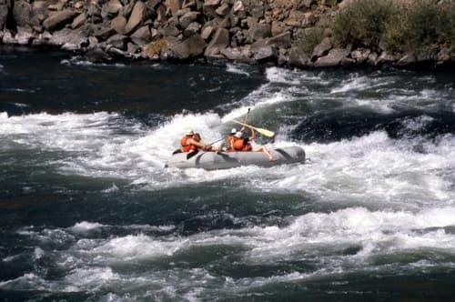
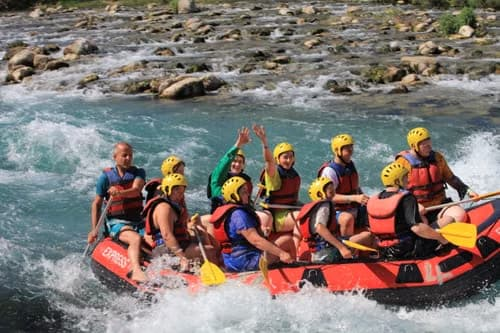
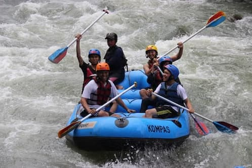

Our Featured Rafting Trips
Choose from our selection of guided adventures designed for all skills levels.

Canyon Run (Half-Day)
Difficulty: Beginner / Family Friendly
Duration: 4 Hours
Experience rolling rapids and stunning canyon walls. Perfect for families and first-time rafters looking for a fun introduction to white water.
Book This Trip
Thunder Gorge (Full-Day)
Difficulty: Intermediate
Duration: 8 Hours
Tackle continuous Class III and IV rapids through narrow rock gorges. Includes a riverside gourmet deli lunch prepared by our expert guides.
Book This Trip
Wilderness Expedition (3-Day)
Difficulty: Advanced
Duration: 3 Days / 2 Nights
An immersive backcountry journey deep into remote river canyons. Camp under the stars, tackle legendary rapids, and unplug from the world.
Book This Trip